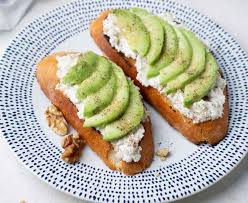

Ingredientes:
- 2 rebanadas de pan integral o tostadas de maíz
- 1 aguacate maduro
- 2 huevos
- Jugo de medio limón
- Sal y pimienta al gusto
- 1 cucharadita de aceite de oliva
- Pimienta roja o ajonjolí para decorar (opcional)
Preparación:
- Tritura el aguacate con jugo de limón, sal y pimienta.
- Tuesta el pan integral o las tostadas.
- En una sartén, calienta el aceite de oliva y cocina los huevos al gusto (fritos, revueltos o pochados).
- Unta el aguacate sobre las tostadas y coloca los huevos encima.
- Decora con pimienta roja o ajonjolí y disfruta tu desayuno saludable. 🍞🥑